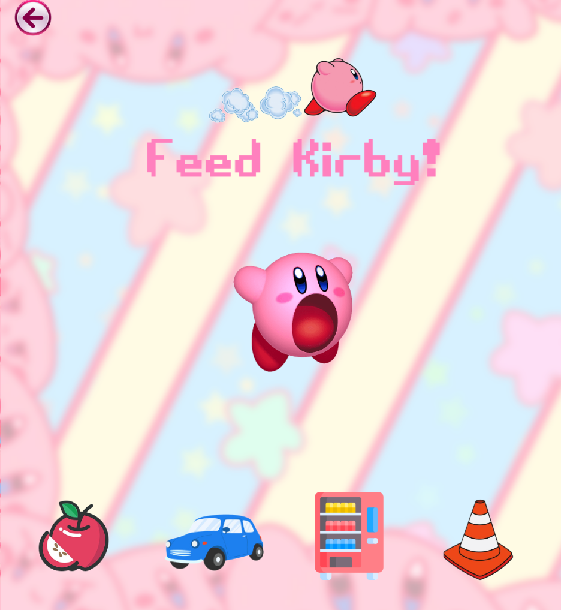

Section 2 Project 2
This project involves creating a self-contained, single-page site that utilizes hover effects and CSS selectors to enhance user interaction.

Learning to work with different viewport sizes is essential for providing a consistent and seamless user experience.
I designed an interactive "Feed Kirby" page inspired by my favorite Nintendo character, Kirby. She is a cute creature that can swallow anything and transform her shape or gain abilities based on the items she consumes.